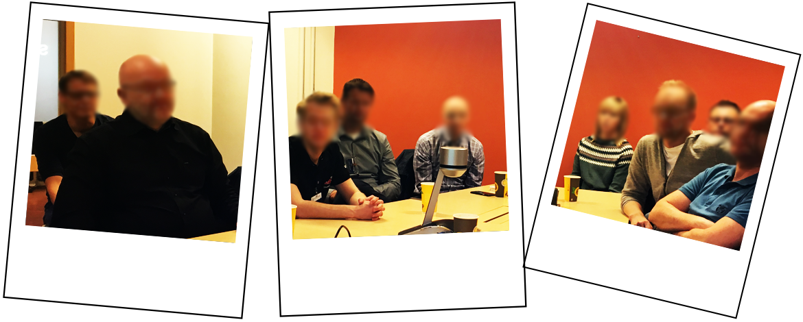

{{> header}}

<div class="article-wrapper">


    <h5>Method</h5>

    <h1>Usability testing</h1>

    <h2>Give tasks to target users. Watch them solve problems. Offer no help. Invite them to speak their minds. Observe their reactions.</h2>

    <div class="article-image">
        <div class="article-image-element">
            
              <div class="article-image-overlay">
                  <!--<h2><span class="highlight">Focus group meeting at Norwegian Maritime Authority where we discussed the certification needs of ship owners, ship builders and seafarers</span></h2>-->
              </div>
        </div>
    </div>


    <div class="article-text">

        <p>A usability test is easy to carry out. A conversation or interview with a target person where we show some designs and ask some questions can be regarded as a usability test. However, I tend to have an interactive prototype on a screen, as the basic starting point. It's a good idea to formulate all the questions in advance of the testing. I strive to record the screens and user's comments during the testing, for documentation.

        </br></br>Usability testing is not only extremely valuable to measure the user experience of a product, but it's also helping us understand that all people are different, and interfaces can never be intuitive enough. The testing is to check if the proposed design solution really is as desirable and effective as we may hope. Subsequent changes are then made to fit the results and feedback from people.</p>

    </div>

</div>


{{> footer}}
